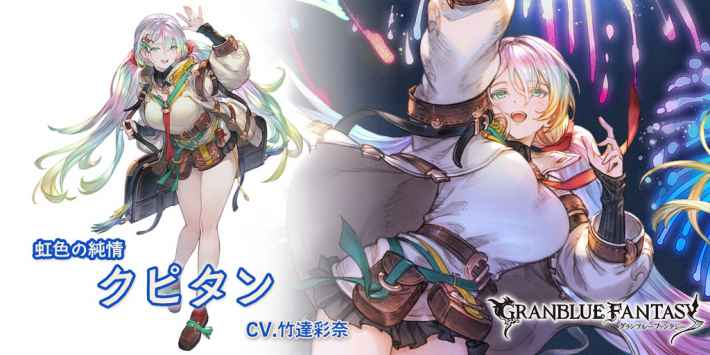
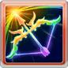

依據虹之矢的種類數自己技傷上限+5%(最多35%)
クピタン
基本資訊
| 定位 | 攻擊 |
| 得意武器 | 弓 |
| 種族 | 人類 |
| CV | 竹達彩奈 |
立繪
上限解放前||上限解放後奧義
| 虹の弓 | |
| 水屬性4.5倍傷害 1技CD歸0 |
主動技能
|  CD:7 |
アスペク･トラジェクト |
| 敵方單體7次水屬性1.2倍傷害 依據虹之矢的種類發動追加效果 ・赤之矢:驅散敵方1個強化效果 ・橙之矢:敵方命中下降(2T) ・黃之矢:我方全體弱體時間-2T ・綠之矢:我方全體HP回復10%(最多2000) ・青之矢:敵方單體氷結Lv+1，持續180秒 ・藍之矢:敵方單體恐怖效果(3T) ・紫之矢:敵方單體特動傷害-20%(3T) |
|
CD:7 |
レイン･リフルジェンス |
| 敵方單體7次水屬性1.2倍傷害 吸收目標CT1，成功時自己奧義值+20% |
|
CD:7 |
ドローレインボウ |
| 自己其他技能CD歸0 同一個傷害技能(紅技)可以使用2次(無法消除/1T) |
被動技能
|
セブンスカレイド |
| 自己使用強化技能(黃技)及奧義時，自己隨機獲得2種虹之矢(永久/無法消除) 依據虹之矢的種類數自己技傷上限+5%(最多35%) |
|
|
双魚宮の彩光 |
| 水屬性角色技傷予傷上升(最多5萬) |